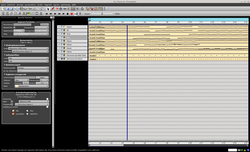
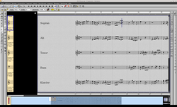
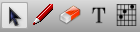
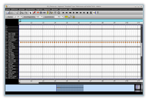
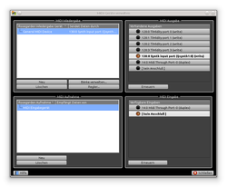
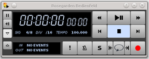
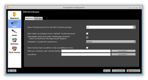

Rosegarden
Dieser Artikel wurde für die folgenden Ubuntu-Versionen getestet:
Ubuntu 16.04 Xenial Xerus
Ubuntu 14.04 Trusty Tahr
Zum Verständnis dieses Artikels sind folgende Seiten hilfreich:
Rosegarden  ist eine Bearbeitungssoftware für Notensätze, verbunden mit einem leistungsfähigen Audio- und MIDI-Sequenzer. Das Programm richtet sich an Komponisten, Musiker, Musikstudenten und Betreiber kleinerer Studios. Durch diverse Erweiterungsmöglichkeiten lässt es sich gut in ein Tonstudio integrieren.
ist eine Bearbeitungssoftware für Notensätze, verbunden mit einem leistungsfähigen Audio- und MIDI-Sequenzer. Das Programm richtet sich an Komponisten, Musiker, Musikstudenten und Betreiber kleinerer Studios. Durch diverse Erweiterungsmöglichkeiten lässt es sich gut in ein Tonstudio integrieren.
Rosegarden ermöglicht die Erstellung und Bearbeitung von Notensätzen und Partituren, ergänzt durch andere Formen der Darstellung wie z.B. einem Matrixeditor für das Schlagwerk. Über den Sequenzer kann das gesamte Werk oder einzelne Spuren wiedergegeben werden, Aufnahmen von MIDI-Geräten und anderen Quellen sind ebenfalls möglich. Die erstellten Stücke können als MIDI-Datei, im LilyPond-Format, als csounds- oder mup-Datei sowie im MusicXML-Format exportiert werden. Importierbar sind die Dateiformate MIDI und Hydrogen.
Neben den Funktionen als MIDI-Sequenzer kann man mit Rosegarden auch Samples im WAV-Format verarbeiten und in verschiedenen Spuren arrangieren. Für die akustische Bearbeitung solcher Samples stehen umfangreiche Filter zur Verfügung. Man kann diese Möglichkeiten noch erweitern; dazu unterstützt Rosegarden Plugins im LADSPA-Format.
Das Programm ermöglicht auch den Einsatz auch DSSI-Plugins, die Synthesizer-Funktionen bereitstellen. Damit ist es auch indirekt möglich, VST-Plugins zu nutzen.
Rosegarden wird auf Basis der Qt-Bibliotheken entwickelt und ist derzeit nur für Linux verfügbar. Es steht unter der GNU General Public License.
Installation¶
Rosegarden ist über die offiziellen Paketquellen verfügbar [1], jedoch abhängig von der Ubuntu-Version nicht in der aktuellsten Fassung:
rosegarden (universe)
 mit apturl
mit apturl
Paketliste zum Kopieren:
sudo apt-get install rosegarden
sudo aptitude install rosegarden
MIDI-Synthesizer¶
Wenn die Soundkarte im eigenen Rechner keinen MIDI-Baustein hat, benötigt man einen MIDI-Synthesizer. Im Zusammenspiel mit Rosegarden eignen sich dafür zwei verschiedene Programme:
TiMidity oder
Details zur Verwendung dieser beiden Möglichkeiten gibt es weiter unten.
TiMidity¶
Möchte man TiMidity nutzen, sollten zusätzlich die Pakete
jackd (universe)
qjackctl (universe)
timidity (universe)
mit apturl
Paketliste zum Kopieren:
sudo apt-get install jackd qjackctl timidity
sudo aptitude install jackd qjackctl timidity
installiert werden. Die ersten beiden Pakete stellen einen Jack-Audio-Server bereit, TiMidity ist der eigentliche MIDI-Synthesizer, der dann seine Audioausgabe an den Jack-Audio-Server weiterleiten kann.
FluidSynth¶
FluidSynth installiert [1] man mit den Paketen
qsynth (universe)
fluid-soundfont-gm (universe)
fluid-soundfont-gs (universe)
mit apturl
Paketliste zum Kopieren:
sudo apt-get install qsynth fluid-soundfont-gm fluid-soundfont-gs
sudo aptitude install qsynth fluid-soundfont-gm fluid-soundfont-gs
Bei der Installation des Pakets qsynth sollten die beiden Soundfonts automatisch mit installiert werden.
Bedienung¶
Dies ist nur eine sehr kurze Einführung in die Bedienung von Rosegarden. Der Funktionsumfang ist enorm und soll hier nur ansatzweise wiedergegeben werden. Auf der Projekthomepage steht ein ausführliches Wiki zur Verfügung, das alle Bedienelemente erklärt. Man findet dort auch einige Tutorials.
Sprache¶
Die Sprache der Benutzeroberfläche wird von der im System verwendeten Sprache bestimmt. Derzeit sind 21 Sprachen verfügbar, von denen allerdings leider nur 12 aktuell gehalten werden, darunter auch Deutsch.
Hauptfenster¶
|  |
| Hauptfenster |
Bei Start von Rosegarden öffnet sich das Hauptfenster. Auf der rechten Seite sieht man die Spuren, deren spezielle Parameter man auf der linken Seite einstellen kann. Falls dort nicht die speziellen Parameter angezeigt werden, kann man diese im Menü "Anzeige → spezielle Parameter anzeigen" oder mit der Taste P aufrufen.
Zunächst ist es sinnvoll, die Taktart, das Tempo und die Länge des neuen Stücks festzulegen. Im Menü "Komposition" findet man dazu die Einträge "Tempoänderung hinzufügen" und "Änderung der Taktart hinzufügen". Die sich dann öffnenden Fenster sind weitgehend selbsterklärend. Man kann für jede Änderung einen Takt oder einen Zeitpunkt vorgeben; so sind im Verlaufe des Stücks auch Änderungen der Taktart oder des Tempos möglich.
Die Länge des Stücks legt man unter "Komposition → Anfang und Ende der Komposition ändern" fest. Die Länge wird in ganzen Takten eingegeben. Da Rosegarden ein neues Stück standardmäßig mit einem 4/4-Takt beginnt, ist es sinnvoll, ggf. zuerst die Taktart zu ändern, um dann die Länge des Stücks festzulegen.
Wenn man eine Spur auswählt, gibt es auf der linken Seite die speziellen Parameter. Hier kann man im Auswahlmenü "Gerät" zwischen drei Arten der Spuren wählen:
| Spurarten | |
| Audio | Erzeugt eine Spur, in der man Samples aus WAVE-Dateien importieren kann. |
| Synthesizer Plugin | Erlaubt den Zugriff auf Synthesizer, die als DSSI-Plugin eingebunden werden können. Details können in der Online-Hilfe und auf der Projekthomepage nachgelesen werden. |
| Allgemeines MIDI-Gerät | Erzeugt eine MIDI-Spur, in die man Noten oder Percussion-Anweisungen eingeben kann. |
Audio-Spuren¶
Für die Verwaltung von Samples muss man diese zunächst laden. Dies geschieht unter "Datei → Audiodateien verwalten". Aus der Liste der Samples kann man dann ein Sample an die gewünschte Position im Hauptfenster einfügen. In den speziellen Parametern kann man dann noch die Wiedergabelautstärke einstellen.
Rosegarden ermöglicht auch die Aufnahme von WAVE-Samples und die Bearbeitung derselben mit verschiedenen Filtern, welche man als LADSPA-Plugins einbindet. Mehr dazu weiter unten.
MIDI-Spuren¶
Um eine MIDI-Spur mit Inhalt zu füllen, wählt man in der Werkzeugleiste das Werkzeug Zeichnen (ein roter Stift); man kann dieses auch mit der Taste F2 aufrufen. Dann zeichnet man in einer Spur einen neuen Abschnitt der gewünschten Länge. Man kann die Länge auch unter "Segment → Dauer setzten" verändern; dazu muss das bzw. müssen die entsprechende(n) Segment(e) vorher ausgewählt sein.
In den speziellen Parametern weist man der Spur dann noch ein Instrument zu und kann noch weitere Eigenschaften der Spur einstellen, wie z.B. das Transponieren einer Spur oder die Spanne der Tonhöhen, die im Segment eingegeben werden können.
Auch die Aufnahme von MIDI-Spuren von externen MIDI-Geräten ist möglich.
Notationseditor¶
|  |
| Notationseditor |
Der Notationseditor erlaubt die Eingabe von Noten mit Hilfe der Maus und/oder der Tastatur. Man wählt zunächst ein oder mehrere Segmente aus, dann ruft man das Kontextmenü mit der rechten Maustaste  auf und wählt dort "Im Notationseditor öffnen" aus. Alternativ kann man auch die Taste
N benutzen.
auf und wählt dort "Im Notationseditor öffnen" aus. Alternativ kann man auch die Taste
N benutzen.
Im Notationseditor erscheint dann ein leeres Notensystem. Links und rechts gibt es Schaltflächen zur Eingabe von Notenlängen, Schlüsseln, Vorzeichen und Betonungszeichen. Die Bedienung ist recht intuitiv, man wählt das entsprechende Symbol und klickt dann mit der Maus an die Stelle, an der man es positionieren möchte.
Alle Elemente kann man auch mit der Tastatur einfügen. Dies geschieht immer an der Stelle, an der der blaue senkrechte Strich sich gerade befindet. Mit Hilfe der Pfeiltasten ← und → kann man dessen Position verändern. Die Tastenbelegung wird zum Einen in den Menüs des Fensters angezeigt, zum Anderen steht sie in den kurzen Hilfe-Boxen, die erscheinen, wenn man den Mauszeiger über einer Schaltfläche ruhen lässt.
Die Eingabe von Noten in verschiedenen Höhen und verschiedenen Längen über die Tastatur ist auch möglich. Die Längen bestimmt man dabei über die Eingabe einer Ziffer, die Tonhöhe über die Eingabe eines Buchstaben. Welcher Buchstabe nun welche Tonhöhe erzeugt, hängt davon ab, in welcher Tonart man gerade Noten eingibt. Eine ausführliche Darstellung dieser anfangs sicherlich gewöhnungsbedürftigen Eingabe würde hier den Rahmen sprengen, es wird daher auf die entsprechende Stelle im Wiki der Projekthomepage verwiesen.
 Man kann eingegebene Noten auch verändern oder löschen. Dazu wechselt man das Werkzeug von "Noten und Pausen malen" (roter Stift, Taste F3 ) zu "Auswählen und editieren" (Pfeilsymbol, Taste F2 ) oder "Löschen" (Radiergummi, Taste F4 ). Die Texteingabe für Gesangsstücke kann man mit dem Werkzeug "Text" (T-Symbol, Taste F8 ) bewerkstelligen, Gitarrenakkorde ergänzt man mit dem Gitarrenakkord-Werkzeug (Grifftafel, F9 ).
Eine detaillierte Darstellung der Funktionen und Möglichkeiten des Notationseditors findet man im Wiki der Projekthomepage .
Matrixeditor¶
Anstelle der Eingabe von Noten kann man Melodielinien auch in Form einer Matrix eingeben. Dazu wählt man ein Segment aus und wählt dann im Kontextmenü unter der rechten Maustaste den Eintrag "Im Matrixeditor" öffnen. Alternativ kann man auch die Taste
M verwenden.
Der Matrixeditor zeigt auf der linken Seite eine Klaviatur, rechts daneben erscheint ein Raster. Möchte man zum Beispiel am Ende von Takt 3 eine Viertelnote D3 spielen, so setzt man in das Rasterfeld am Ende von Takt 3 (die Takte werden oben dargestellt) ein Feld auf Höhe der Taste D3. Die Länge der so eingegebenen Noten wird von der Rasterung bestimmt. Diese verändert man oben links über der Matrix im Auswahlfeld "Raster". Bei einer Rasterung in 1/8-Schritten erzeugt ein Klick auf ein Feld in der Matrix eine Achtel-Note usw.
Percussion Matrix Editor¶
|  |
| Percussion Matrix Editor |
Für die Eingabe von Percussionsinstrumenten steht der sog. Percussion Matrix Editor zur Verfügung. Dazu wählt man ein Segment aus, das mit dem Percussionsinstrument der MIDI-Ausgabe verbunden ist, üblich ist hierfür Instrument Nummer 10. Im Kontextmenü unter Maustaste 2 wählt man dann den Eintrag "Im Percussion Matrix Editor öffnen" aus. Alternativ kann man auch die Taste
D verwenden.
Der Percussion Matrix Editor funktioniert analog zum Matrixeditor, man kann also durch die Wahl der Rasterung festlegen, wann ein Schlag erklingen soll. Auf der linken Seite erscheint anstelle der Klaviatur eine Liste von Instrumenten, die im MIDI-Standard als Schlagwerk zur Verfügung gestellt werden.
Rosegarden als MIDI-Sequenzer¶
Hinweis:
Falls im System keine MIDI-fähigen Soundkomponenten verbaut sind, müssen diese durch MIDI-Synthesizer-Programme emuliert werden. Für die Nutzung zusammen mit Rosegarden empfiehlt dazu sich entweder eine Kombination aus dem Jack-Audio-Server und TiMidity oder die Nutzung der Fluid-Soundfonts mittels FluidSynth.
Jack¶
Rosegarden ist auf die Nutzung mit dem Jack-Audio-Server konzipiert. Das Programm arbeitet zwar auch mit anderen Audio-Servern (ALSA, Phonon, PulseAudio) zusammen, dabei kommt es allerdings erfahrungsgemäß häufig zu unsauberer Wiedergabe und unerklärlichen Fehlermeldungen. Die Verwendung von Jack wird daher von den Projektkoordinatoren empfohlen.
Zur Konfiguration wird auf den Wiki-Artikel jack verwiesen und die Verwendung der grafischen Benutzeroberfläche qjackctl empfohlen. Für die Verwendung zusammen mit Rosegarden sollte man Jack unbedingt auf Echtzeitpriorität einstellen, wie unter Tonstudio/Konfiguration beschrieben.
TiMidity¶
Als MIDI-Synthesizer kann man das Kommandozeilenprogramm TiMidity verwenden. Dieses wird zwischen Rosegarden und Jack gesetzt, d.h. die Ausgabe von Rosegarden wird auf TiMidity eingestellt und TiMidity gibt dann seinerseits die Ausgabe an Jack weiter.
Bevor man Rosegarden startet, muss man also zunächst TiMidity aufrufen. Dazu gibt man in einem Terminal-Fenster [3] den Befehl
timidity -iA -Oj -B2,8
an, der TiMidity als ALSA-Sequencer (Option iA) mit der Ausgabe nach Jack (Option Oj) startet. Die Option B2,8 beeinflusst die sog. Buffergröße; 2 und 8 sind erfahrungsgemäß gute Werte. Die Bedienung von TiMidity wird ausführlich im Artikel timidity beschrieben.
Das von TiMidity standardmäßig verwendete Soundfont (siehe nächster Abschnitt) ist nicht sonderlich umfangreich. Es empfiehlt sich daher die Installation der Fluid-Soundfonts, wie sie im Artikel timidity beschrieben ist.
FluidSynth¶
Eine Alternative zu TiMidity stellt FluidSynth dar. FluidSynth ist eine Zusammenstellung einiger sog. Soundfonds mit einem grafischen Interface, das auch als MIDI-Synthesizer funktioniert.
Ein Soundfont ist eine Bibliothek, in der Informationen zur Synthese der Klänge verschiedener Instrumente abgelegt sind. Diese braucht ein MIDI-Synthesizer, um dann zum Beispiel den Klang einer Geige zu erzeugen, wenn dies in einer MIDI-Datei erwünscht ist. Die Fluid-Soundfonts stellen eine frei verfügbare Version dar, die ein einigermaßen gutes Klangergebnis liefern. Möchte man noch realistischere Klänge, muss man auf meist kostenpflichtige, proprietäre Soundfonts zurückgreifen.
Das zu FluidSynth gehörige Programm qsynth stellt verschiedene Regler und Optionen zur Verwendung der FluidSynth-Soundfonts bereit und kann von Rosegarden genau so wie TiMidity als Ausgabekanal angesprochen werden.
Vergleich der beiden Lösungen¶
Im Vergleich zur oben beschriebenen Kombination von TiMidity und Jack lässt sich qsynth in der Regel einfacher und intuitiver bedienen. Es sind nur wenige Optionen abzustimmen, häufig liefert qsynth schon mit den vorab eingestellten Standards ein gut hörbares Ergebnis. Andererseits hat man bei FluidSynth nicht so fein einstellbare und detaillierte Optionen wie bei Jack.
Rosegarden¶
|  |
| Dialog MIDI Geräte verwalten |
Hinweis:
Bevor man Rosegarden startet, sollten (falls erforderlich) entweder qsynth oder die Kombination des Jack-Audio-Servers mit TiMidity gestartet werden und einwandfrei laufen!
Nachdem man Rosegarden gestartet hat, kann man unter "Studio → MIDI-Geräte verwalten" die MIDI-Wiedergabe mit einem Ausgabekanal verbinden. Entweder man nutzt das einen der drei TiMidity-Ports, die das Programm standardmäßig zur Verfügung stellt, oder den Port von FluidSynth, meist angegeben als "Synth input port".
Wenn man eine Soundkarte mit MIDI-Baustein hat, sollte diese – eine ordentliche Konfiguration des Soundsystems voraus gesetzt – ebenfalls als verfügbarer Ausgangskanal aufgelistet werden.
Bei Verwendung von FluidSynth kann man die Fehlermeldung von Rosegarden, es gebe Probleme mit der Audio-Konfiguration, ignorieren. Rosegarden erwartet einen Jack-Audio-Server und sucht diesen automatisch beim Start. Wenn Jack nicht läuft, wird die Fehlermeldung ausgegeben.
Mit Rosegarden aufnehmen¶
Audio-Samples¶
Rosegarden kann Audio-Samples direkt von einem Soundeingang des Systems aufnehmen und als Segment zur Verfügung stellen. Dazu wählt man zunächst die Spur oder die Spuren aus, auf die aufgenommen werden soll(en). Dazu aktiviert man die kleine rote Schaltfläche neben dem Namen der Spur, die für "Auf diese Spur aufnehmen" steht. Die gleichzeitige Aufnahme auf mehrere Spuren ist möglich.
Als zweiten Schritt legt man für jede Spur, auf die aufgenommen werden soll, die speziellen Parameter fest. Man wählt eine Spur aus und stellt dann den Eingabe- und den Ausgabekanal "In" bzw "Out" ein. Dabei steht "ln1" (Line 1) üblicherweise für den Mikrofon- und "ln2" (line2) für den Line-In-Eingang; andere Bezeichnungen sind möglich. Wählt man "Master", so übernimmt Rosegarden die globalen Einstellungen des Systems. Man kann dann noch die Aufnahmelautstärke justieren (roter Regler).
Zuletzt legt man noch die Position fest, ab der das Sample als neues Segment mitgeschnitten werden soll. Dazu schiebt man den Wiedergabebalken auf den gewünschten Zeitpunkt. Der Wiedergabebalken ist die senkrechte blaue Linie, die im Bildschirmfoto des Hauptfensters in der Mitte von Takt 4 steht. Man setzt ihn auf eine anderen Zeitpunkt, in dem man die gewünschte Position in im grauen Bereich direkt unterhalb der Taktnummern anklickt  . Ganze Takte kann man auch mit den Tasten
Bild ↑ und
Bild ↓ hin- und herspringen.
. Ganze Takte kann man auch mit den Tasten
Bild ↑ und
Bild ↓ hin- und herspringen.
|  |
| Bedienfeld |
Man startet und stoppt die Aufnahme mit der Schaltfläche "Aufnahme" in der Symbolleiste oberhalb der Segmente. Diese steht auch im sog. Bedienfeld zur Verfügung, das man unter "Anzeige → Bedienfeld anzeigen" oder durch Druck der Taste T anzeigen kann.
Nachdem die Aufnahme beendet ist, stellt Rosegarden das Sample als neues Segment zur Verfügung, das verschoben, gekürzt, kopiert oder nachbearbeitet werden kann.
MIDI mitschneiden¶
Hat man ein MIDI-Keyboard oder ein anderes Instrument mit MIDI-Ausgabe an den Rechner angeschlossen, kann man Rosegarden dazu nutzen, die gespielten Melodien mit zu schneiden und in Noten zu übersetzen. Dazu muss man Rosegarden zunächst unter "Studio → MIDI-Geräte verwalten" mitteilen, welches Gerät für die Eingabe genutzt werden soll. Unten rechts sollte eine Liste aller erkannten Geräte mit MIDI-Eingabe erscheinen, aus dem man das gewünschte Instrument einträgt.
Danach legt man fest, auf welche Spuren aufgenommen werden soll. Dazu aktiviert man die Schaltfläche mit dem kleinen gelben Kreis, die neben dem Namen der Spur liegt und für "Auf diese Spur aufnehmen" steht. Eine gleichzeitige Aufnahme auf mehrere Spuren ist möglich. Anschließend kann man für jede Spur in den speziellen Parametern unter "Aufnahmefilter" noch weitere Einstellungen vornehmen, z.B. welches Instrument vom MIDI-Gerät gelesen werden soll.
Zuletzt legt man noch die Position fest, ab der das Sample als neues Segment mitgeschnitten werden soll. Dazu schiebt man den Wiedergabebalken auf den gewünschten Zeitpunkt. Der Wiedergabebalken ist die senkrechte blaue Linie, die im Bildschirmfoto des Hauptfensters in der Mitte von Takt 4 steht. Man setzt ihn auf eine anderen Zeitpunkt, in dem man die gewünschte Position in im grauen Bereich direkt unterhalb der Taktnummern anklickt . Ganze Takte kann man auch mit den Tasten
Bild ↑ und
Bild ↓ hin- und herspringen.
Man startet und stoppt die Aufnahme mit der Schaltfläche "Aufnahme" in der Symbolleiste oberhalb der Segmente. Diese steht auch im sog. Bedienfeld zur Verfügung, das man unter "Anzeige → Bedienfeld anzeigen" oder durch Druck der Taste T anzeigen kann.
Nachdem die Aufnahme beendet ist, stellt Rosegarden die aufgezeichnete Partie als neues Segment zur Verfügung, das verschoben, gekürzt, kopiert oder nachbearbeitet werden kann. Eine nachträgliche Trennung der Segmente nach Tonhöhe ist möglich, um so z.B. eine Partitur mit Violinen- und Bassschlüssel zu erzeugen.
Eine nützliche Hilfe bei der Aufnahme ist das Metronom, das man auf dem Bedienfeld mit Hilfe der Schaltfläche "Metronom" aktivieren kann. Rosegarden gibt dann während der Aufnahme ein Metronom auf den eingestellten MIDI-Ausgang. Was das Metronom wie signalisieren soll, kann man unter "Studio → Verwalte Metronom" einstellen.
Eine weitere nützliche Funktion bei der Aufnahme von MIDI-Einspielung ist das sog. Quantisieren. Rosegarden übersetzt die eingespielten Stücke so exakt wie möglich in einen Notensatz. Wenn man nun zum Beispiel eine Achtelnote nicht lange genug aushält, macht Rosegarden daraus dann eine punktierte Sechzehntelnote. Diese Unebenheiten kann man nachträglich automatisch korrigieren. Dazu wählt man ein oder mehrere Segment(e) aus und ruft die Funktion "Segment → Quantisieren" auf. Rosegarden erfragt dann verschiedene Vorgaben für die Quantisierung, unter anderem das Raster. Wenn die kürzeste Note im Stück zum Beispiel eine Achtelnote ist, übersetzt Rosegarden alle Noten in Vielfache einer Achtelnote.
Achtung!
Vor dem Einsatz der Quantisieren-Funktion empfiehlt es sich, eine Sicherungskopie der Rosegarden-Datei anzulegen. Durch das Quantisieren werden unter Umständen sehr viele Änderungen vorgenommen, die nicht alle rückgängig gemacht werden können.
Problembehebung¶
Generell¶
Keine Audioausgabe¶
Rosegarden speichert in den eigen Dateien (Endung .rg) unter anderem auch den Port, auf den die Ausgabe eingestellt war. Ruft man eine Datei auf, die zum letzten Speicherzeitpunkt auf einem Ausgabekanal wiedergegeben wurden, der aktuell nicht mehr verfügbar ist, so wird die Ausgabe auf "kein Anschluss" umgeleitet, man hört demnach nichts. Im Dialog "Studio → MIDI-Geräte verwalten" kann man die Ausgabe auf einen aktiven Ausgang umstellen.
Es wird nur eine Spur wiedergegeben¶
Wenn nur diejenige Spur wiedergegeben wird, deren Name man links ausgewählt hat, befindet sich Rosegarden höchstwahrscheinlich im sog. Solo-Modus. Diesen schaltet man im Bedienfeld mit der Schaltfläche S ein und wieder aus. Sollte das Bedienfeld nicht angezeigt werden, kann man es unter "Anzeige → Bedienfeld anzeigen" oder durch Drücken der Taste T anzeigen bzw. ausblenden. Die Schaltfläche S kann im Bedienfeld unter Umständen ausgeblendet sein; sie gehört zu den "Weiteren Kontrollelementen", die man durch Klick auf das kleine Dreieck links unten im Bedienfeld anzeigen kann.
Es wird nur ein Ton oder Akkord wiedergegeben¶
|  |
| Dialog Einstellungen → MIDI |
Wenn Rosegarden beim Abspielen nur den Ton oder Klang wiedergibt, der beim Start der Wiedergabe an der Stelle des Wiedergabebalkens (blaue senkrechte Linie) steht, hat dies häufig zwei mögliche Ursachen.
Es könnte Probleme mit der Synchronisation von Rosegarden mit dem MIDI-Sequenzer (TiMidity, FluidSynth) geben. Man kann versuchen, unter "Editieren → Einstellungen" unter dem Punkt "MIDI" auf dem Reiter "Allgemein" die "Zeitgeber (-Quelle) des Sequencers" von der automatischen Erkennung auf eine der angebotenen Alternativen umzustellen. Da diese vom verwendeten Rechnersystem abhängen, kann hier kein speziellerer Rat gegeben werden, als einfach die Möglichkeiten durchzuprobieren.
Man kann in den MIDI-Einstellungen auf dem Reiter "MIDI-Sync" einige Vorgaben ändern. Wenn noch weitere MIDI-Programme auf dem System laufen, wie zum Beispiel TiMidity, behebt häufig die Festlegung von Rosegarden auf "MIDI Machine Control Modus Master" und "MIDI Time Control Modus Master" und die entsprechende Konfiguration aller anderen MIDI-Dienste als MTC-Slave bzw. MTM-Slave das Problem. Auch der umgekehrte Fall kann manchmal das Problem beheben, d.h. man konfiguriert einen MIDI-Dienst als MTC-Master und MTM-Master und Rosegarden entsprechend als MTC-Slave und MTM-Slave.
In seltenen Fällen können auch Probleme mit der Echtzeitpriorität diesen Fehler verursachen, insbesondere bei älteren Systemen. Man kann daher versuchen, einen Echtzeitkernel zu installieren, falls nicht schon vorhanden. Mehr zu diesem Thema unter Echtzeitkernel und bei UbuntuStudio RealTimeKernel .
Eine Datei kann nicht geöffnet oder geschrieben werden¶
Rosegarden zeigt hin und wieder beim Öffnen, Speichern, Im- oder Exportieren einer Datei einen Fehler an, dass die Datei nicht gelesen bzw. zum Speichern geöffnet werden kann. Das liegt nahezu immer daran, dass man im Dateipfad oder im Dateinamen Umlaute oder Sonderzeichen verwendet. Eine Umbennennung der betreffenden Datei(en), z.B. in Haendel anstatt Händel sollte Abhilfe schaffen.
Rosegarden verursacht Systemabsturz¶
Wenn man bei Rosegarden z.B. eine Datei öffnen möchte oder die Einstellungen verändert, und man versucht, den sich dafür öffnenden Dialog zu schließen, kann es vorkommen, dass Rosegarden einen weitreichenden Systemabsturz verursacht, bei dem in schlimmen Fällen der X-Server (= die grafische Oberfläche des Systems) komplett einfriert. Es werden vom System auch keine anderen Eingaben mehr akzeptiert, so dass man nur noch einen Hardware-Reset ausführen kann.
Dieses Verhalten hängt häufig mit einem Versionsupdate zusammen. Nach dem Update auf eine neuere Version von Rosegarden können die beschriebenen Abstürze auftreten. Ursache dafür sind die veralteten Konfigurationsdateien der Vorgängerversion, die zum Teil nicht mehr kompatibel mit neueren Versionen sind.
Abhilfe schafft man, indem man die alten Konfigurationsdateien umbenennt oder löscht. Der Befehl
find ~ -name "*rosegarden*"
listet unter anderem alle Dateien und Verzeichnisse auf, die Rosegarden zu Konfigurationszwecken nutzt. Welche das sind, ist leider von der Linux-Distribution abhängig, daher wird hier auf eine detaillierte Liste verzichtet. Als Orientierungspunkt kann man sich alle Dateien und Verzeichnisse merken, die versteckt sind (der Dateipfad beginnt dann mit einem Punkt). Man benennt alle so gefundenen Dateien um, z.B. nach dem Schema old.rosegarden, oder löscht sie.
Die Umbenennung oder Löschung sollte dazu führen, dass Rosegarden in den "Werkzustand" versetzt wird. Beim Start wird dann unter anderem wieder die Willkommensnachricht angezeigt. Der Crash tritt danach nicht mehr auf.
Jack und TiMidity¶
Keine Audioausgabe¶
Wenn TiMidity beim Start Couldn't open JACK device meldet, so muss der Jack-Server zunächst (neu) gestartet werden; danach muss man TiMidity nochmal aufrufen.
Unter Umständen passt auch die Verbindung innerhalb des Jack-Servers nicht. Mittels der grafischen Benutzeroberfläche qjackctl kann man sich die Verbindungen anzeigen lassen. Dort muss im Reiter "Audio" der Client-Ausgang von TiMidity (oder die Soundkarte mit MIDI-Baustein) mit dem Eingang system verbunden werden.
Die Audioausgabe ist unsauber und zerhackt¶
Dies liegt meist an der Konfiguration des Jack-Audioservers. Dieser sollte auf Echtzeitpriorität eingestellt sein. Bei hakeliger, zerstückelter Audioausgabe kann man die Echtzeitpriorität des Jack-Servers erhöhen, vom voreingestellten Wert 5 auf 1 oder 2. Dies geht sehr komfortabel mittels des grafischen Benutzeroberfläche qjackctl, in den Einstellungen findet man einen entsprechenden Eintrag.
Unter Umständen kann es bei der Veränderung der Echtzeitpriorität zu Problemen mit dem Kernel kommen. Mehr zum Thema Echtzeitpriorität unter Echtzeitkernel und bei UbuntuStudio RealTimeKernel .
Sollte die Erhöhung der Priorität keine Abhilfe schaffen, kann man (zusätzlich) auch noch die Buffergröße von TiMidity erhöhen. Beim Aufruf von TiMidity in der Kommandozeile kann man dazu in der Option -B2,8 größere Zahlenwerte einsetzen.
Eine etwas detaillierte Anleitung zur Abhilfe gibt es auf dieser privaten Homepage  . Dort wird auch beschrieben, wie man das System dauerhaft so einstellt, dass Jack und timidity sauber arbeiten (sollten).
. Dort wird auch beschrieben, wie man das System dauerhaft so einstellt, dass Jack und timidity sauber arbeiten (sollten).
 Übersichtsseite
Übersichtsseite- Erstellt mit Inyoka
-
 2004 – 2017 ubuntuusers.de • Einige Rechte vorbehalten
2004 – 2017 ubuntuusers.de • Einige Rechte vorbehalten
Lizenz • Kontakt • Datenschutz • Impressum • Serverstatus -
Serverhousing gespendet von